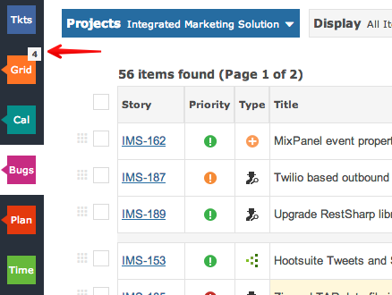
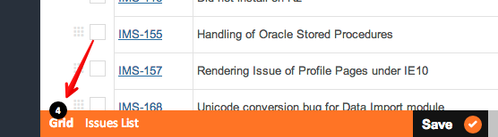
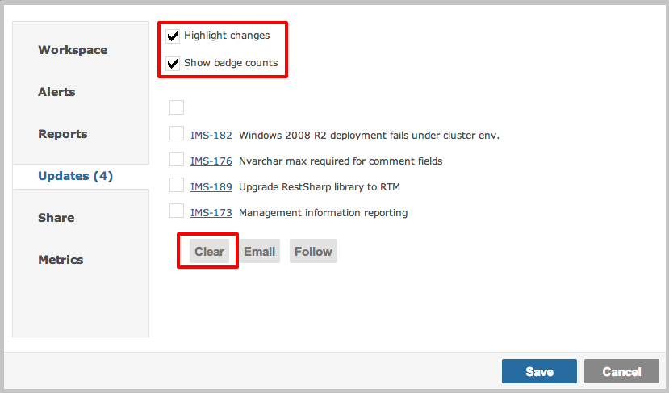

Every workspace automatically reports changes that your co-workers have made.

You can clear the notifications to remove the badge count and the yellow highlight.

The workspace options box provides another means to clear the notifications, disable them alltogether and even have them emailed to you.
